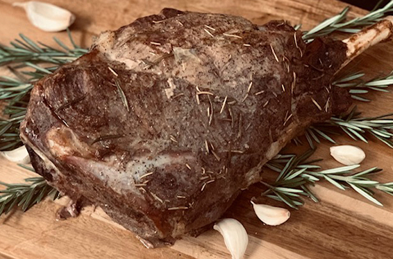

Legendary Leg of Lamb

Description
It's now 2022, so one may ask themsleves, "Why do I have to cook this Lamb in a hole in the ground?"
My friends, that's a fair question that will get a fairly convoluted answer.
"Authenticity is key and your backyard grill sucks."
This lamb is so divine, one may become a demigod after you've prepared it.
Earthy undertones, a mellow sweetness, and fresh herbs will ravage your senses. It's ravaging.
*** Each time one makes this, it's mandatory the recipe is doubled. Pay respects to Chef Odin with a bountiful sacrifice.
Ingredients
- One leg of lamb
- 3/4 cup of honey
- 1/2 cup of stone ground mustard
- Six to Eight cloves of Garlic (more if you'd like)
The Pit
- Gather some friends and dig a pit, just shallow of two feet. It should have a diameter of at least eighteen inches
- Fill the bottom ten inches of the pit with firewood. Fill the rest of the pit with stones
- Light your kindling. The fire will be smoldering a little bit when the rocks are red hot
- While the stones heat up, prepare the lamb
Steps
- Make several slits in your cut of meat, equally stuffing each of them with garlic cloves.
- Rub salt and pepper onto all sides of the meat.
- Cover the leg of Lamb with mustard and honey.
- Scatter fresh rosemary on the side facing up.
- Wrap the lamb in foil (centuries ago this would've been done with leaves.)
- Push the hot stones to the outskirts of the pit, making space for the foil wrapped lamb.
- Make sure there are no hot stones underneath or atop the lamb, they should be placed around the perimeter.
- Let the lamb sit for seventy-five minutes or so, without making any adjustments. Your meal should be ready when time is up!
- Fill your hole back up once you're done or make it a permanent barbecue pit!
Optional
For any vegetarians one may be dining with, this recipe can be applied to most any vegetable. For anyone that likes a little green on their plate, one can wrap a vegetable coated in salt, pepper, garlic, and olive oil!